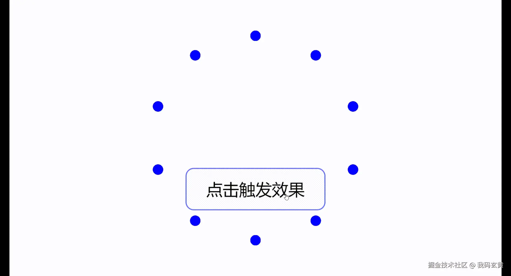

在当今的网页设计中，动态效果和交互性是提升用户体验的关键因素。
mo.js，一个轻量级的 JavaScript 动画库，为前端开发者提供了一种简单而强大的方法来创建引人注目的动画效果。
本文将向您介绍 mo.js 的基本概念、特点、使用场景以及如何在 Vue 环境中应用它。
github：github.com/mojs/mojs
mo.js 是一个专注于运动和动画的 JavaScript 库，它允许开发者通过简单的 API 来创建复杂的动画效果。
与传统的动画库相比，mo.js 更加注重动画的流畅性和表现力，使得动画设计既简单又高效。
轻量级：mo.js 的文件大小非常小，不会对页面加载时间产生显著影响。
易于使用：通过简单的 API，即使是初学者也能快速上手。
强大的动画引擎：支持多种动画类型，如缓动、路径动画等。
可定制性：开发者可以根据自己的需求定制动画效果。
兼容性：支持所有现代浏览器，包括移动设备。
mo.js 适用于需要动态效果和交互性的任何项目，例如：
网站首页的动态元素：吸引用户注意力，增加页面的互动性。
交互式用户界面组件：提升用户操作的直观性和趣味性。
动态图表和数据可视化：使数据展示更加生动和易于理解。
游戏和应用程序的动画效果：增强用户体验，使应用更加吸引人。
在 Vue 环境中，mo.js 可以与 Vue 的响应式系统无缝集成，实现动态的用户界面。
以下是一个简单的示例，展示如何在 Vue 组件中使用 mo.js 来创建一个简单的动画效果。
首先，确保您已经安装了 mo.js：
npm install mo.js
然后，您可以在 Vue 组件中这样使用它：
<template>
<div id="app">
<button @click="toggleAnimation">点击触发效果</button>
<div ref="box" class="box"></div>
</div>
</template>
<script>
// 引入 mo.js 的核心功能
import { Burst } from "@mojs/core";
export default {
methods: {
toggleAnimation() {
// 获取方块的 DOM 元素
const box = this.$refs.box;
// 创建一个 mo.js 动画
new Burst({
parent: box, // 将动画附加到方块元素
radius: { 50: 100 }, // 动画的半径从 50 到 100
count: 10, // 动画中的元素数量
children: {
shape: "circle", // 子元素的形状
fill: "blue", // 填充颜色
opacity: 0.6, // 不透明度
scale: { 0.5: 1 }, // 缩放动画
duration: 1000, // 动画持续时间
},
}).play(); // 播放动画
},
},
};
</script>
<style>
#app {
display: flex;
flex-direction: column;
align-items: center;
margin-top: 50px;
}
.box {
width: 100px;
height: 100px;
background-color: #ffc107;
margin: 20px;
}
</style>
运行结果如下：
mo.js 是一个功能强大且易于使用的动画库，它为前端开发者提供了一种简单的方式来增强网页的动态效果和交互性。
无论是在 Vue 环境中还是在其他项目中，mo.js 都能帮助您创造出令人印象深刻的动画效果。
通过上述示例，我们可以看到如何在 Vue 项目中集成 mo.js，以及如何通过简单的代码实现复杂的动画效果。
这不仅能够提升用户的交互体验，还能使您的网页设计更加生动和有趣。